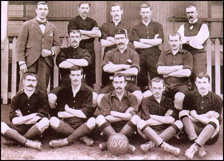
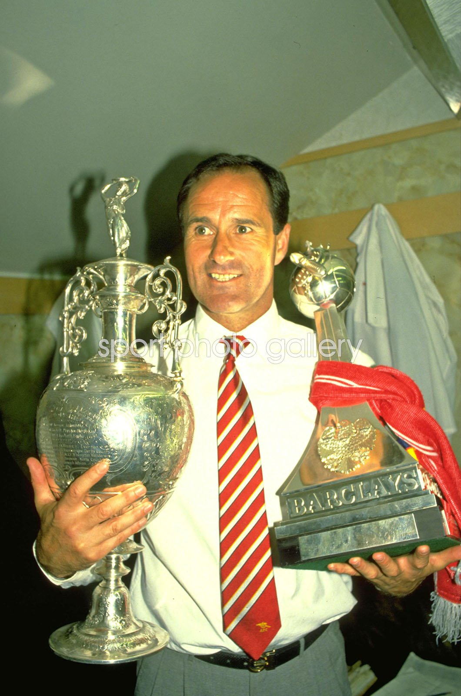

The Arsenal Arsenal Football Club that we all know a love today started from humble beginnings by a group of coworkers in the Woolwich Arsenal Armament Factory started a soccer team in 1886. These men could have no idea that getting together to form a soccer team would change the dynamic of London, England for the foreseeable future!

The real turning point into the building blocks of success for Arsenal came with the appointment of George Graham as manager of the club.
George Graham was a former Arsenal player who was appointed manager of the club in 1886. In 1987, Graham led the team to its first silverware in 11 years.
Graham was also responsible for signing some legendary players like Ian Wright, Tony Adams, Martin Keown, and David Seaman.